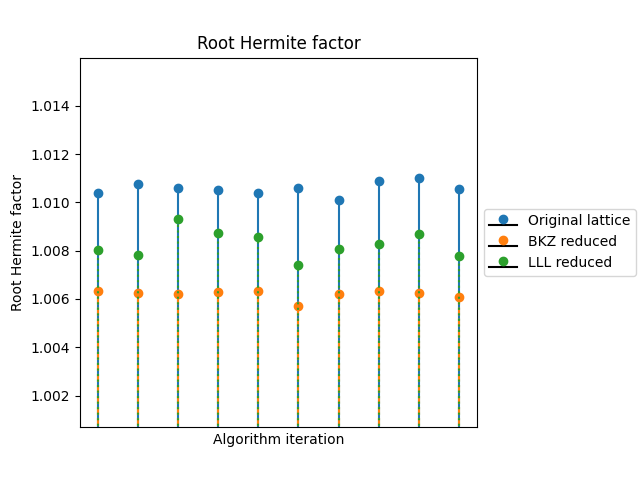

Lattice Reduction Algorithms
About
This repository contains a Python-based framework demonstrating how lattice reduction algorithms improve lattice basis quality.
Assumptions:
- Shortest vector problem (SVP) is computationally hard, especially in high dimensions.
- Hardness increases rapidly with lattice dimension.
- Lattice reduction algorithms aim to produce shorter, more orthogonal basis vectors.
This framework includes LLL (Lenstra–Lenstra–Lovász) and BKZ (Block Korkine–Zolotarev) algorithms with a basis analysis module. Referenced algorithms are presented in 1 2 3.
The reference implementations of the algorithms are written in Python. The source code documentation is located here.
Benchmarks
The figures below were generated using the following parameters:
python3 main.py --lattice_dimension 100 --entry_bound 173 --bkz_version 1 --svp_solver 1 --block_size 50 --precision default --repetitions 10
Length of the shortest vector
After reduction, the first vector in the basis is typically the shortest or a good approximation of the shortest vector in the lattice.

Root Hermite Factor
The Root Hermite factor is defined as
where \(||b_0||\) is the length of the shortest vector, \(Vol(L)\) is the lattice volume, and \(n\) is the dimension.

Dimension-Normalized Orthogonality defect
The dimension-normalized orthogonality defect is defined as
where \(\prod_{i=0}^{n-1}||b_i||\) is the product of the column norms, \(Vol(L)\) is the lattice volume, and \(n\) is the lattice dimension.

Tables
Original lattice
| Lattice ID | Length of the shortest vector | Root Hermite Factor | Orthogonality Defect | Run time | Lattice dimension |
|---|---|---|---|---|---|
| 0 | 882.481 | 1.0104 | 3.149 | 0 | 100 |
| 1 | 889.138 | 1.01076 | 3.26916 | 0 | 100 |
| 2 | 882.529 | 1.01059 | 3.24436 | 0 | 100 |
| 3 | 881.664 | 1.01052 | 3.20589 | 0 | 100 |
| 4 | 854.468 | 1.01038 | 3.26442 | 0 | 100 |
| 5 | 879.279 | 1.01058 | 3.21151 | 0 | 100 |
| 6 | 825.717 | 1.0101 | 3.30215 | 0 | 100 |
| 7 | 884.122 | 1.0109 | 3.31856 | 0 | 100 |
| 8 | 916.028 | 1.01099 | 3.22997 | 0 | 100 |
| 9 | 887.616 | 1.01054 | 3.18974 | 0 | 100 |
LLL
| Lattice ID | Length of the shortest vector | Root Hermite Factor | Orthogonality Defect | Run time | Lattice dimension |
|---|---|---|---|---|---|
| 0 | 698.469 | 1.00804 | 2.3361 | 0.315355 | 100 |
| 1 | 664.983 | 1.00783 | 2.40382 | 0.649872 | 100 |
| 2 | 776.168 | 1.00929 | 2.36154 | 0.495019 | 100 |
| 3 | 737.031 | 1.00872 | 2.38515 | 0.286682 | 100 |
| 4 | 714.128 | 1.00857 | 2.41172 | 0.239121 | 100 |
| 5 | 641.12 | 1.00739 | 2.34646 | 0.314027 | 100 |
| 6 | 675.347 | 1.00807 | 2.3859 | 0.358797 | 100 |
| 7 | 680.509 | 1.00826 | 2.41225 | 0.457209 | 100 |
| 8 | 729.019 | 1.00869 | 2.30686 | 0.346707 | 100 |
| 9 | 674.331 | 1.00777 | 2.34467 | 0.422423 | 100 |
BKZ
| Lattice ID | Length of the shortest vector | Root Hermite Factor | Orthogonality Defect | Run time | Lattice dimension |
|---|---|---|---|---|---|
| 0 | 588.857 | 1.00632 | 2.37001 | 16.9971 | 100 |
| 1 | 568.019 | 1.00624 | 2.42404 | 136.337 | 100 |
| 2 | 570.746 | 1.00619 | 2.37819 | 163.605 | 100 |
| 3 | 579.668 | 1.0063 | 2.32041 | 26.2719 | 100 |
| 4 | 570.651 | 1.00631 | 2.40039 | 30.5831 | 100 |
| 5 | 541.588 | 1.00569 | 2.40142 | 18.6064 | 100 |
| 6 | 561.97 | 1.00622 | 2.40106 | 210.45 | 100 |
| 7 | 562.442 | 1.00634 | 2.39399 | 358.142 | 100 |
| 8 | 572.447 | 1.00625 | 2.34884 | 52.8821 | 100 |
| 9 | 571.123 | 1.0061 | 2.37104 | 81.8939 | 100 |
References
-
Claus-Peter Schnorr and Martin Euchner, "Lattice basis reduction: Improved practical algorithms and solving subset sum problems", International Symposium on Fundamentals of Computation Theory (FCT), 1991, pp. 68–85. ↩
-
Claus-Peter Schnorr and Martin Euchner, "Lattice basis reduction: Improved practical algorithms and solving subset sum problems", Mathematical Programming, 1994. ↩
-
Claus-Peter Schnorr and Horst Helmut Hörner, "Attacking the Chor-Rivest cryptosystem by improved lattice reduction", EUROCRYPT 1995. ↩